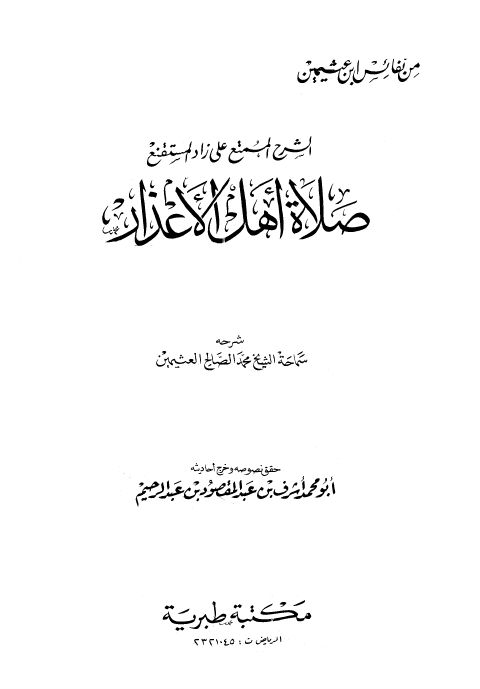

Downloads need an internet connection.
الشرح الممتع على زاد المستقنع صلاة أهل الأعذار
Authors: محمد بن صالح العثيمين
Editors: أشرف بن عبد المقصود
Publishers: مكتبة طبرية
**▫️ العنوان: الشرح الممتع على زاد المستقنع صلاة أهل الأعذار** ▪️ المؤلف: #محمد_بن_صالح_العثيمين ▫️ المحقق: #أشرف_بن_عبد_المقصود ▪️ الناشر: #مكتبة_طبرية ▫️ تاريخ النشر: 1413هـ 1993م ▪️ بلد النشر: الرياض، #السعودية ▫️ الطبعة: 1 ▪️ عدد الأجزاء: 1 ▫️ الصفحات: 135 ▪️ نوع الوعاء: #كتاب ▫️ التصنيف الرئيسي: #الفقه_وأصوله ۪